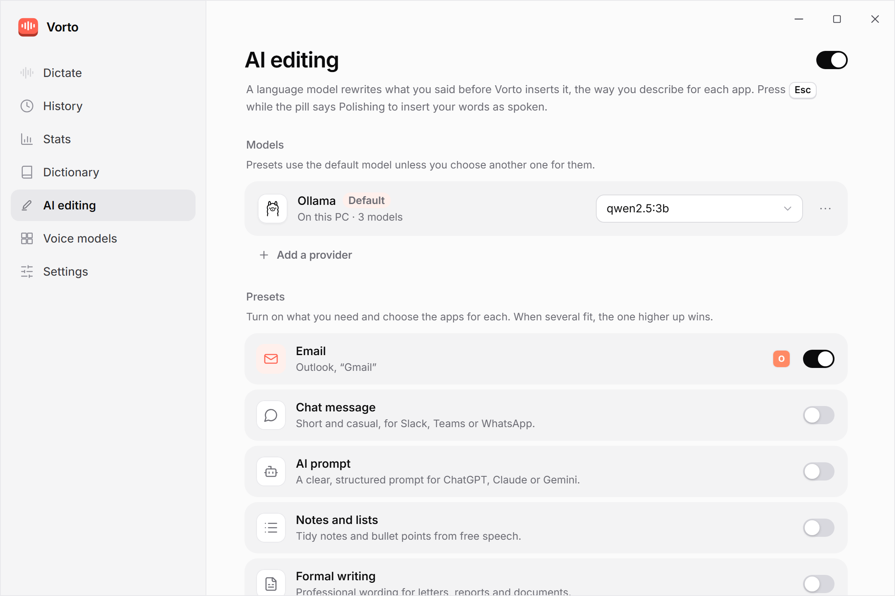

Talk into any app.
Vorto types it.
Hold a key in any Windows app, speak and let go. Your words appear where you were typing, and your voice never leaves your PC.
- Free and open source
- No account
- Windows 10 and 11
No app to switch to.
Vorto waits in the tray. Wherever you can type, in mail, chat, documents or the browser, a key is all it takes.
Hold Right Ctrl
Or any key you like, even a single one. Or press once to start and again to stop.
Speak
A small pill shows your words as they come, and the app they're going into.
Let go
The text is in place a moment later, even after two minutes of talking. Esc discards it.
Say it loosely.
Send it ready.
Optional AI editing rewrites what you said before it lands: a proper email in Outlook, a clear prompt in Claude, tidy notes anywhere. With a free model on your PC or a provider you choose.
What you said
What Vorto inserts
Presets for email, chat, AI prompts, notes, formal writing and a general clean-up. You pick the apps, and Esc inserts your words as spoken.
Small app.
Everything in reach.
Stats, History, a dictionary for your names and terms, and the voice model that fits your PC.

The details matter.
Made to disappear while you work, and to be right the first time.
Works in any app
Pastes in one go and puts your clipboard back, or types the text out. Kept out of Windows clipboard history.
Fast on long dictations
Finished sentences are recognized while you speak, so after you let go only the last seconds are left.
Your words, your spelling
A dictionary for names and terms, with suggestions from what you dictate, and replacements for anything else.
Layout by voice
Say "new line", "three lines" or "as bullet points" with AI editing, and the text is laid out that way.
Stats
The time dictation saved you compared with typing at your speed, and how much you speak into each app.
History
Your last 100 dictations, grouped by app, ready to copy or paste again. Or none, if you turn it off.
Tray and shortcuts
Paste your last dictation again, undo it or copy it, from the tray or with a key combination.
Light, dark or like Windows
Quiet in the tray, starts with Windows if you want, and a click of a key when it listens.
Updates itself
Signed updates from GitHub, downloaded in the background. You choose when to restart.
Your voice never leaves your PC.
Speech recognition runs on your processor or graphics card. There's no account and no telemetry. This is everything Vorto sends over the internet.
| What | Where it goes | When |
|---|---|---|
| Your voice | Nowhere | Recordings stay in memory and in temporary files that Windows deletes as soon as they're closed. |
| What you dictate | Nowhere, unless you choose an online AI provider | Only then, only the text, and only after you allow it for that provider. With Ollama or LM Studio it stays on your PC. |
| A voice model | Downloaded from Hugging Face | Once, pinned to a fixed version and checked by size and SHA-256. |
| Update check | GitHub Releases | At start and every 6 hours. Updates are signed; you can turn this off. |
A voice model for every PC.
No graphics card needed. Download one inside the app, once.
| Model | Languages | Runs best on |
|---|---|---|
| Parakeet v3 · recommended | 25 European languages | Any modern processor · 670 MB |
| Whisper Turbo | 99 languages | A graphics card · 574 MB |
| Whisper Small | 99 languages | A graphics card, or a fast processor · 488 MB |
| Whisper Base | 99 languages | Any processor · 148 MB |
Questions
More in the README.
Is it really free?
Yes. Vorto is open source under the MIT license, with no account, no trial and no ads. Online AI providers, if you choose one, bill you directly for what you use.
Does it work offline?
Yes. You need a connection once to download a voice model. After that, dictation works offline, and so does AI editing with Ollama or LM Studio.
Which languages does it understand?
Parakeet v3 understands 25 European languages and detects them on its own. Whisper covers 99 languages.
Why does Windows warn me about the installer?
Vorto isn't code-signed yet, so SmartScreen may show "Windows protected your PC". Select More info, then Run anyway. Every release is built from its tagged source on GitHub Actions.
What does my PC need?
Windows 11 or Windows 10 22H2 (64-bit), a processor with AVX2 (Intel Core 4th generation or newer, AMD Ryzen, Intel N100) and about 1 GB of free space. 8 GB of RAM is recommended.
Stop typing everything.
Free for Windows 10 and 11. Set up in a minute.